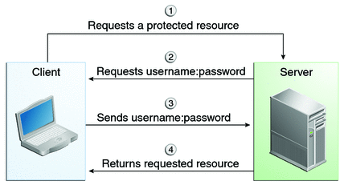
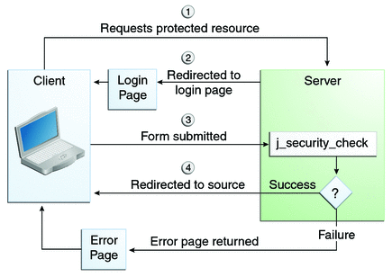

Securing Web Applications
Web applications are created by application developers who give, sell, or otherwise transfer the application to an application deployer for installation into a runtime environment. Application developers communicate how to set up security for the deployed application by using annotations or deployment descriptors. This information is passed on to the deployer, who uses it to define method permissions for security roles, set up user authentication, and set up the appropriate transport mechanism. If the application developer doesn’t define security requirements, the deployer will have to determine the security requirements independently.
Some elements necessary for security in a web application cannot be specified as annotations for all types of web applications. This chapter explains how to secure web applications using annotations wherever possible. It explains how to use deployment descriptors where annotations cannot be used.
Specifying Security Constraints
A security constraint is used to define the access privileges to a collection of resources using their URL mapping.
If your web application uses a servlet, you can express the security constraint information by using annotations. Specifically, you use the @HttpConstraint and, optionally, the @HttpMethodConstraint annotations within the @ServletSecurity annotation to specify a security constraint.
If your web application does not use a servlet, however, you must specify a security-constraint element in the deployment descriptor file. The authentication mechanism cannot be expressed using annotations, so if you use any authentication method other than BASIC (the default), a deployment descriptor is required.
The following subelements can be part of a security-constraint:
Web resource collection (web-resource-collection): A list of URL patterns (the part of a URL after the host name and port you want to constrain) and HTTP operations (the methods within the files that match the URL pattern you want to constrain) that describe a set of resources to be protected. Web resource collections are discussed in Specifying a Web Resource Collection.
Authorization constraint (auth-constraint): Specifies whether authentication is to be used and names the roles authorized to perform the constrained requests. For more information about authorization constraints, see Specifying an Authorization Constraint.
User data constraint (user-data-constraint): Specifies how data is protected when transported between a client and a server. User data constraints are discussed in Specifying a Secure Connection.
Specifying a Web Resource Collection
A web resource collection consists of the following subelements:
web-resource-name is the name you use for this resource. Its use is optional.
url-pattern is used to list the request URI to be protected. Many applications have both unprotected and protected resources. To provide unrestricted access to a resource, do not configure a security constraint for that particular request URI.
The request URI is the part of a URL after the host name and port. For example, let’s say that you have an e-commerce site with a catalog that you would want anyone to be able to access and browse, and a shopping cart area for customers only. You could set up the paths for your web application so that the pattern /cart/* is protected but nothing else is protected. Assuming that the application is installed at context path /myapp, the following are true:
http://localhost:8080/myapp/index.xhtml is not protected.
http://localhost:8080/myapp/cart/index.xhtml is protected.
A user will be prompted to log in the first time he or she accesses a resource in the cart/ subdirectory.
http-method or http-method-omission is used to specify which methods should be protected or which methods should be omitted from protection. An HTTP method is protected by a web-resource-collection under any of the following circumstances:
If no HTTP methods are named in the collection (which means that all are protected)
If the collection specifically names the HTTP method in an http-method subelement
If the collection contains one or more http-method-omission elements, none of which names the HTTP method
Securing HTTP Resources describes how to create security constraints for HTTP methods that do not unintentionally leave your application open to cross-site tracing or HTTP verb tampering attacks.
Specifying an Authorization Constraint
An authorization constraint (auth-constraint) contains the role-name element. You can use as many role-name elements as needed here.
An authorization constraint establishes a requirement for authentication and names the roles authorized to access the URL patterns and HTTP methods declared by this security constraint. If there is no authorization constraint, the container must accept the request without requiring user authentication. If there is an authorization constraint but no roles are specified within it, the container will not allow access to constrained requests under any circumstances. Each role name specified here must either correspond to the role name of one of the security-role elements defined for this web application or be the specially reserved role name *, which indicates all roles in the web application. Role names are case sensitive. The roles defined for the application must be mapped to users and groups defined on the server, except when default principal-to-role mapping is used.
For more information about security roles, see Declaring Security Roles. For information on mapping security roles, see Mapping Roles to Users and Groups.
For a servlet, the @HttpConstraint and @HttpMethodConstraint annotations accept a rolesAllowed element that specifies the authorized roles.
Specifying a Secure Connection
A user data constraint (user-data-constraint in the deployment descriptor) contains the transport-guarantee subelement. A user data constraint can be used to require that a protected transport-layer connection, such as HTTPS, be used for all constrained URL patterns and HTTP methods specified in the security constraint. The choices for transport guarantee are CONFIDENTIAL, INTEGRAL, or NONE. If you specify CONFIDENTIAL or INTEGRAL as a security constraint, it generally means that the use of SSL is required and applies to all requests that match the URL patterns in the web resource collection, not just to the login dialog box.
The strength of the required protection is defined by the value of the transport guarantee.
Specify CONFIDENTIAL when the application requires that data be transmitted so as to prevent other entities from observing the contents of the transmission.
Specify INTEGRAL when the application requires that the data be sent between client and server in such a way that it cannot be changed in transit.
Specify NONE to indicate that the container must accept the constrained requests on any connection, including an unprotected one.
Note - In practice, Java EE servers treat the CONFIDENTIAL and INTEGRAL transport guarantee values identically.
The user data constraint is handy to use in conjunction with basic and form-based user authentication. When the login authentication method is set to BASIC or FORM, passwords are not protected, meaning that passwords sent between a client and a server on an unprotected session can be viewed and intercepted by third parties. Using a user data constraint with the user authentication mechanism can alleviate this concern. Configuring a user authentication mechanism is described in Specifying an Authentication Mechanism in the Deployment Descriptor.
To guarantee that data is transported over a secure connection, ensure that SSL support is configured for your server. SSL support is already configured for the GlassFish Server.
Note - After you switch to SSL for a session, you should never accept any non-SSL requests for the rest of that session. For example, a shopping site might not use SSL until the checkout page, and then it might switch to using SSL to accept your card number. After switching to SSL, you should stop listening to non-SSL requests for this session. The reason for this practice is that the session ID itself was not encrypted on the earlier communications. This is not so bad when you’re only doing your shopping, but after the credit card information is stored in the session, you don’t want anyone to use that information to fake the purchase transaction against your credit card. This practice could be easily implemented by using a filter.
Specifying Security Constraints for Resources
You can create security constraints for resources within your application. For example, you could allow users with the role of PARTNER full access to all resources at the URL pattern /company/wholesale/* and allow users with the role of CLIENT full access to all resources at the URL pattern /company/retail/*. This is the recommended way to protect resources if you do not want to protect some HTTP methods while leaving other HTTP methods unprotected. An example of a deployment descriptor that would demonstrate this functionality is the following:
<!-- SECURITY CONSTRAINT #1 -->
<security-constraint>
<web-resource-collection>
<web-resource-name>wholesale</web-resource-name>
<url-pattern>/company/wholesale/*</url-pattern>
</web-resource-collection>
<auth-constraint>
<role-name>PARTNER</role-name>
</auth-constraint>
<user-data-constraint>
<transport-guarantee>CONFIDENTIAL</transport-guarantee>
</user-data-constraint>
</security-constraint>
<!-- SECURITY CONSTRAINT #2 -->
<security-constraint>
<web-resource-collection>
<web-resource-name>retail</web-resource-name>
<url-pattern>/company/retail/*</url-pattern>
</web-resource-collection>
<auth-constraint>
<role-name>CLIENT</role-name>
</auth-constraint>
<user-data-constraint>
<transport-guarantee>CONFIDENTIAL</transport-guarantee>
</user-data-constraint>
</security-constraint>
Specifying Authentication Mechanisms
A user authentication mechanism specifies
The way a user gains access to web content
With basic authentication, the realm in which the user will be authenticated
With form-based authentication, additional attributes
When an authentication mechanism is specified, the user must be authenticated before access is granted to any resource that is constrained by a security constraint. There can be multiple security constraints applying to multiple resources, but the same authentication method will apply to all constrained resources in an application.
Before you can authenticate a user, you must have a database of user names, passwords, and roles configured on your web or application server. For information on setting up the user database, see Managing Users and Groups on the GlassFish Server.
The Java EE platform supports the following authentication mechanisms:
Basic authentication
Form-based authentication
Digest authentication
Client authentication
Mutual authentication
Basic, form-based, and digest authentication are discussed in this section. Client and mutual authentication are discussed in Chapter 42, Java EE Security: Advanced Topics.
HTTP basic authentication and form-based authentication are not very secure authentication mechanisms. Basic authentication sends user names and passwords over the Internet as Base64-encoded text. Form-based authentication sends this data as plain text. In both cases, the target server is not authenticated. Therefore, these forms of authentication leave user data exposed and vulnerable. If someone can intercept the transmission, the user name and password information can easily be decoded.
However, when a secure transport mechanism, such as SSL, or security at the network level, such as the Internet Protocol Security (IPsec) protocol or virtual private network (VPN) strategies, is used in conjunction with basic or form-based authentication, some of these concerns can be alleviated. To specify a secure transport mechanism, use the elements described in Specifying a Secure Connection.
HTTP Basic Authentication
Specifying HTTP basic authentication requires that the server request a user name and password from the web client and verify that the user name and password are valid by comparing them against a database of authorized users in the specified or default realm.
Basic authentication is the default when you do not specify an authentication mechanism.
When basic authentication is used, the following actions occur:
A client requests access to a protected resource.
The web server returns a dialog box that requests the user name and password.
The client submits the user name and password to the server.
The server authenticates the user in the specified realm and, if successful, returns the requested resource.
Figure 40-2 shows what happens when you specify HTTP basic authentication.
Figure 40-2 HTTP Basic Authentication
Form-Based Authentication
Form-based authentication allows the developer to control the look and feel of the login authentication screens by customizing the login screen and error pages that an HTTP browser presents to the end user. When form-based authentication is declared, the following actions occur.
A client requests access to a protected resource.
If the client is unauthenticated, the server redirects the client to a login page.
The client submits the login form to the server.
The server attempts to authenticate the user.
If authentication succeeds, the authenticated user’s principal is checked to ensure that it is in a role that is authorized to access the resource. If the user is authorized, the server redirects the client to the resource by using the stored URL path.
If authentication fails, the client is forwarded or redirected to an error page.
Figure 40-3 shows what happens when you specify form-based authentication.
Figure 40-3 Form-Based Authentication
The section The hello1_formauth Example: Form-Based Authentication with a JavaServer Faces Application is an example application that uses form-based authentication.
When you create a form-based login, be sure to maintain sessions using cookies or SSL session information.
For authentication to proceed appropriately, the action of the login form must always be j_security_check. This restriction is made so that the login form will work no matter which resource it is for and to avoid requiring the server to specify the action field of the outbound form. The following code snippet shows how the form should be coded into the HTML page:
<form method="POST" action="j_security_check"> <input type="text" name="j_username"> <input type="password" name="j_password"> </form>
Digest Authentication
Like basic authentication, digest authentication authenticates a user based on a user name and a password. However, unlike basic authentication, digest authentication does not send user passwords over the network. Instead, the client sends a one-way cryptographic hash of the password and additional data. Although passwords are not sent on the wire, digest authentication requires that clear-text password equivalents be available to the authenticating container so that it can validate received authenticators by calculating the expected digest.
Specifying an Authentication Mechanism in the Deployment Descriptor
To specify an authentication mechanism, use the login-config element. It can contain the following subelements.
The auth-method subelement configures the authentication mechanism for the web application. The element content must be either NONE, BASIC, DIGEST, FORM, or CLIENT-CERT.
The realm-name subelement indicates the realm name to use when the basic authentication scheme is chosen for the web application.
The form-login-config subelement specifies the login and error pages that should be used when form-based login is specified.
Note - Another way to specify form-based authentication is to use the authenticate, login, and logout methods of HttpServletRequest, as discussed in Authenticating Users Programmatically.
When you try to access a web resource that is constrained by a security-constraint element, the web container activates the authentication mechanism that has been configured for that resource. The authentication mechanism specifies how the user will be prompted to log in. If the login-config element is present and the auth-method element contains a value other than NONE, the user must be authenticated to access the resource. If you do not specify an authentication mechanism, authentication of the user is not required.
The following example shows how to declare form-based authentication in your deployment descriptor:
<login-config>
<auth-method>FORM</auth-method>
<realm-name>file</realm-name>
<form-login-config>
<form-login-page>/login.xhtml</form-login-page>
<form-error-page>/error.xhtml</form-error-page>
</form-login-config>
</login-config>The login and error page locations are specified relative to the location of the deployment descriptor. Examples of login and error pages are shown in Creating the Login Form and the Error Page.
The following example shows how to declare digest authentication in your deployment descriptor:
<login-config>
<auth-method>DIGEST</auth-method>
</login-config>
Declaring Security Roles
You can declare security role names used in web applications by using the security-role element of the deployment descriptor. Use this element to list all the security roles that you have referenced in your application.
The following snippet of a deployment descriptor declares the roles that will be used in an application using the security-role element and specifies which of these roles is authorized to access protected resources using the auth-constraint element:
<security-constraint>
<web-resource-collection>
<web-resource-name>Protected Area</web-resource-name>
<url-pattern>/security/protected/*</url-pattern>
<http-method>PUT</http-method>
<http-method>DELETE</http-method>
<http-method>GET</http-method>
<http-method>POST</http-method>
</web-resource-collection>
<auth-constraint>
<role-name>manager</role-name>
</auth-constraint>
</security-constraint>
<!-- Security roles used by this web application -->
<security-role>
<role-name>manager</role-name>
</security-role>
<security-role>
<role-name>employee</role-name>
</security-role>In this example, the security-role element lists all the security roles used in the application: manager and employee. This enables the deployer to map all the roles defined in the application to users and groups defined on the GlassFish Server.
The auth-constraint element specifies the role, manager, that can access the HTTP methods PUT, DELETE, GET, POST located in the directory specified by the url-pattern element (/jsp/security/protected/*).
The @ServletSecurity annotation cannot be used in this situation because its constraints apply to all URL patterns specified by the @WebServlet annotation.